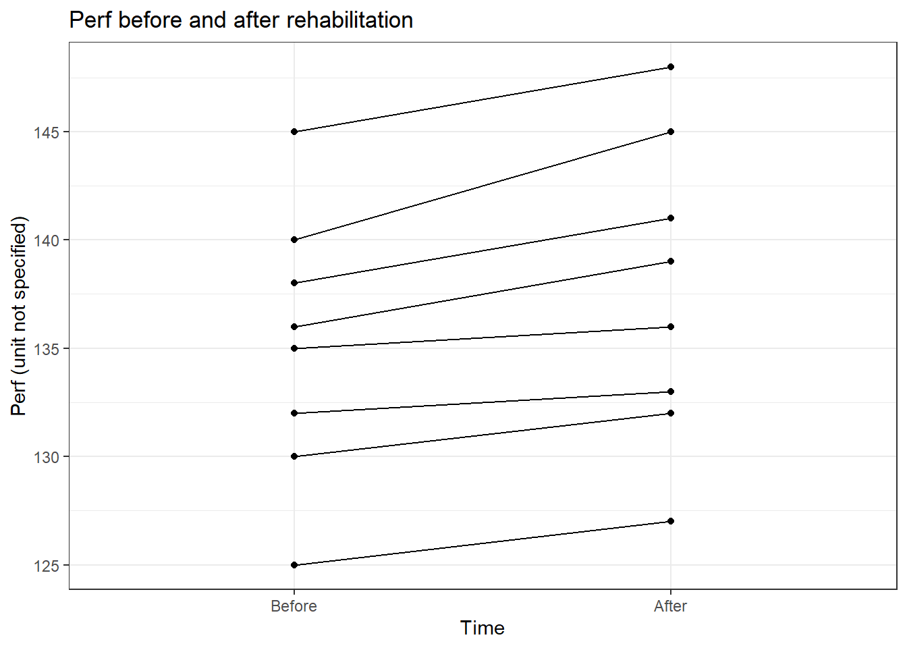
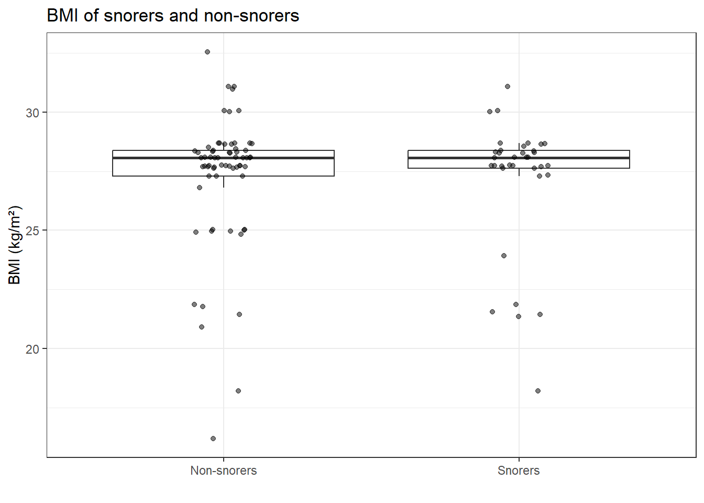
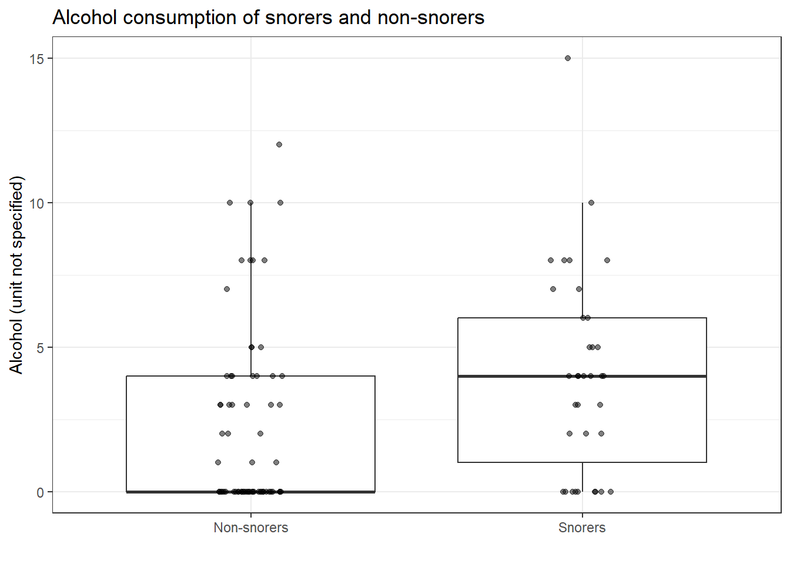
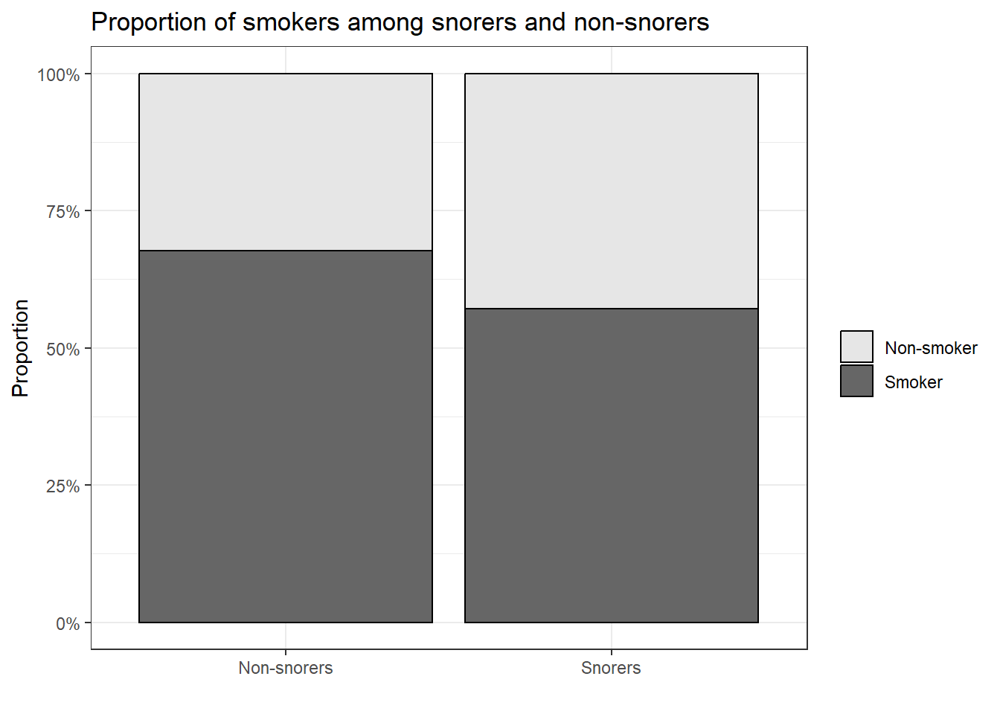
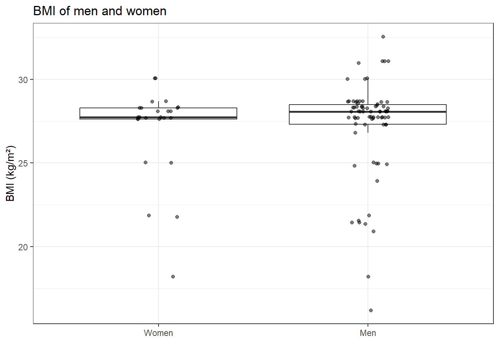
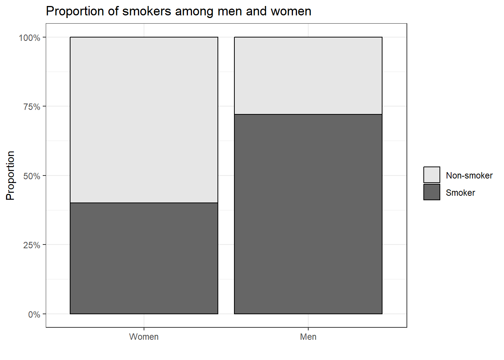

We decided to create separate branches for each section of the assignment so that we could work independently without interfering with each other’s work.
Each subsection was placed in a separate .qmd sub-document to make collaboration easier. The sub-documents were organized into folders according to their sections, keeping the project structure clean and easy for both team members to navigate.
We also added each other as reviewers on Pull Requests so that we could review each other’s code, identify mistakes, and suggest improvements before merging. Before merging the branches, we rendered the main QMD document to check that all sections worked correctly together.
Challenges Encountered and Lessons Learned
Some additional restructuring was done after the creation of branches so they had to be updated from the main branch before we could continue working on them. This was done by taking a pull from the main branch and merging it in the required branch.
Another challenge was making sure that each sub-document could be rendered both independently and as part of the main document. This required loading the necessary libraries and data within each file and carefully managing the file paths so that they worked correctly in both cases.
During the Pull Request reviews, comments were added to point out issues and areas that needed improvement.
The identified issues were discussed, and the requested changes were made before the Pull Requests were merged. This helped us recheck the code, fix errors, and ensure that the final sections were consistent and worked correctly together.
Section 2: Statistical Tests
2.1 Make clear what is a statistical test, and when to use it.
1. What is a median? A mean?
Median: The middle value of a dataset when the values are arranged in order.
Mean: It is the average of all the values, calculated by adding them together and dividing by the number of values.
A statistical test is a method applied to research data to determine the importance of results and assess if those results occurred by chance or not, allowing researchers to draw conclusions.
We use a statistical test when we want to determine whether an observed result is likely to be due to a real effect or to random variation or by chance.
8. What are the assumptions of non-parametric tests?
Non-parametric tests generally require fewer assumptions, but the observations still need to be independent, randomly sampled (collected appropriately) and the data must be suitable for the chosen test.
── Attaching core tidyverse packages ──────────────────────── tidyverse 2.0.0 ──
✔ dplyr 1.2.1 ✔ readr 2.2.0
✔ forcats 1.0.1 ✔ stringr 1.6.0
✔ ggplot2 4.0.3 ✔ tibble 3.3.1
✔ lubridate 1.9.5 ✔ tidyr 1.3.2
✔ purrr 1.2.2
── Conflicts ────────────────────────────────────────── tidyverse_conflicts() ──
✖ dplyr::filter() masks stats::filter()
✖ dplyr::lag() masks stats::lag()
ℹ Use the conflicted package (<http://conflicted.r-lib.org/>) to force all conflicts to become errors
# Read the data fileprepost <-read.csv("data/PrePost.csv")# Names of the variablesnames(prepost)
[1] "perf" "time"
# First rows, summary statistics and number of rowshead(prepost)
perf time
1 125 Before
2 130 Before
3 132 Before
4 135 Before
5 136 Before
6 138 Before
summary(prepost)
perf time
Min. :125.0 Length :16
1st Qu.:132.0 N.unique : 2
Median :136.0 N.blank : 0
Mean :136.4 Min.nchar: 5
3rd Qu.:140.2 Max.nchar: 6
Max. :148.0
nrow(prepost)
[1] 16
# Display all rows to check how the data are orderedprepost
perf time
1 125 Before
2 130 Before
3 132 Before
4 135 Before
5 136 Before
6 138 Before
7 140 Before
8 145 Before
9 127 After
10 132 After
11 133 After
12 136 After
13 139 After
14 141 After
15 145 After
16 148 After
# Number of measures at each time pointtable(prepost$time)
After Before
8 8
The file contains 16 rows, 8 measures Before and 8 measures After rehabilitation, which corresponds to 8 patients. There is no patient identifier, and within each group the values are sorted in increasing order.
What are the measured variables, and what do they measure?
The file contains two variables. “perf” is a performance measure taken on patients with cardiac conditions, but the data file does not specify what it measures exactly. “time” indicates when the measure was taken, before or after the rehabilitation training.
What are the units?
The unit of “perf” is not specified in the data file. “time” is a categorical variable and has no unit.
What are the possible values?
The observed values of “perf” range from 125 to 148. “time” takes two values, Before and After.
What are the expected changes over rehabilitation?
Assuming that higher values of perf mean better performance, perf is expected to increase after rehabilitation. Since the nature of perf is not specified, this expected change is an assumption.
Summary table
Variable
Description
Unit
Possible values
Expected change
perf
Performance measure (exact nature not specified in the data file)
not specified
observed 125 to 148
increase after rehabilitation, assuming higher values mean better performance
time
Moment of the measurement
none
Before, After
not applicable
2.2.2 The analysis
Does the treatment have an effect?
Yes, Perf increased significantly after rehabilitation (Wilcoxon signed-rank test, p < 0.05), assuming that the rows are ordered by patient. The comparison, the test and the graph supporting this answer are detailed below.
What comparison are you going to make?
The Before and After values were measured on the same 8 patients, so we compared perf Before and After rehabilitation with a paired comparison. The data file contains no patient identifier, so we assumed that the rows are in the same patient order in both groups.
Which test will you use? Parametric or non-parametric?
For a paired comparison, normality is checked on the differences between the two measures of each patient.
# Separate the Before and After valuesbefore <- prepost$perf[prepost$time =="Before"]after <- prepost$perf[prepost$time =="After"]# Shapiro-Wilk test on the differences (After minus Before)shapiro.test(after - before)
Shapiro-Wilk normality test
data: after - before
W = 0.89896, p-value = 0.2828
Normality of the differences was not rejected (p > 0.05), but with only 8 patients the Shapiro-Wilk test has very low power, so we used the non-parametric Wilcoxon signed-rank test.
# Wilcoxon signed-rank test (paired, non-parametric)wilcox.test(after, before, paired =TRUE)
Wilcoxon signed rank exact test
data: after and before
V = 36, p-value = 0.007812
alternative hypothesis: true location shift is not equal to 0
Which graph illustrates the effect of the treatment?
A line plot connecting the two measures of each patient shows the individual change, which suits a paired design.
# Patient identifier, assuming the same patient order in both groupsprepost$patient <-rep(1:8, times =2)# Order the time axis: Before then Afterprepost$time <-factor(prepost$time, levels =c("Before", "After"))# One line per patient, from Before to Afterggplot(prepost, aes(x = time, y = perf, group = patient)) +geom_line() +geom_point() +labs(title ="Perf before and after rehabilitation",x ="Time",y ="Perf (unit not specified)") +theme_bw()

Figure: Perf of each patient before and after rehabilitation. Each line connects the two measures of the same patient, assuming that the rows are ordered by patient. All 8 patients show an increase, ranging from 1 to 5 units.
What sentence will you write in your thesis to explain your result?
After the rehabilitation program, perf increased significantly in the 8 patients, with a median increase of 2.5 units (Wilcoxon signed-rank test, p < 0.05), assuming that the rows of the data file are ordered by patient.
This conclusion relies on the assumption that the rows are in the same patient order in both groups. Since the values of each group are sorted in increasing order, this pairing could not be verified, and sorting alone would produce positive differences. The original data with a patient identifier would be needed to confirm this result. Moreover, since the data only include measures before and after the program, we cannot assess whether the effect is lasting.
2.3 Testing some stereotypes
2.3.1 The data
Loading the data
# Load the tidyverse library(tidyverse)# Data path, works alone or from the main documentdata_dir <-if (dir.exists("data")) "data"else"../../data"
# Look at the raw file to identify the separator and the headerreadLines(file.path(data_dir, "snore.txt"), n =5)
# Read the tab-separated filesnore <-read.delim(file.path(data_dir, "snore.txt"))# Type of each variable and summary statisticsstr(snore)
'data.frame': 100 obs. of 7 variables:
$ age : int 47 56 46 70 51 46 40 46 49 39 ...
$ weight: int 71 58 116 96 91 98 112 77 76 119 ...
$ height: int 158 164 208 186 195 188 193 165 164 196 ...
$ alcool: int 0 7 3 3 2 0 5 0 0 3 ...
$ sex : chr "H" "H" "H" "H" ...
$ snore : chr "N" "O" "N" "N" ...
$ tabac : chr "O" "N" "O" "O" ...
summary(snore)
age weight height alcool
Min. :23.00 Min. : 42.00 Min. :158.0 Min. : 0.00
1st Qu.:43.00 1st Qu.: 77.00 1st Qu.:166.0 1st Qu.: 0.00
Median :52.00 Median : 95.00 Median :186.0 Median : 2.00
Mean :52.27 Mean : 90.41 Mean :181.1 Mean : 2.95
3rd Qu.:62.25 3rd Qu.:107.00 3rd Qu.:194.0 3rd Qu.: 4.25
Max. :74.00 Max. :120.00 Max. :208.0 Max. :15.00
sex snore tabac
Length :100 Length :100 Length :100
N.unique : 2 N.unique : 2 N.unique : 2
N.blank : 0 N.blank : 0 N.blank : 0
Min.nchar: 1 Min.nchar: 1 Min.nchar: 1
Max.nchar: 1 Max.nchar: 1 Max.nchar: 1
# Number of people in each categorytable(snore$sex)
F H
25 75
table(snore$snore)
N O
65 35
table(snore$tabac)
N O
36 64
Description of the data
The file contains 100 people and 7 variables, with no missing values: age (years), weight (kg), height (cm), alcool (unit not specified), sex (H = man, F = woman), snore (O = yes, N = no) and tabac (O = smoker, N = non-smoker). Units of weight and height are not given but were deduced from the range of values. The sample includes 75 men and 25 women, 35 snorers and 64 smokers.
Measure of corpulence
Since weight depends on height, corpulence was assessed with the body mass index (BMI = weight / height²).
# BMI in kg/m², with height converted from cm to msnore$bmi <- snore$weight / (snore$height /100)^2summary(snore$bmi)
Min. 1st Qu. Median Mean 3rd Qu. Max.
16.20 27.56 28.07 27.22 28.38 32.55
2.3.2 The analysis
# Libraries, data and BMI, needed when rendered alonelibrary(tidyverse)data_dir <-if (dir.exists("data")) "data"else"../../data"snore <-read.delim(file.path(data_dir, "snore.txt"))snore$bmi <- snore$weight / (snore$height /100)^2
Do the data confirm the following stereotypes?
Are snorers fatter?
# Normality of BMI in each groupshapiro.test(snore$bmi[snore$snore =="O"])
Shapiro-Wilk normality test
data: snore$bmi[snore$snore == "O"]
W = 0.72636, p-value = 9.81e-07
shapiro.test(snore$bmi[snore$snore =="N"])
Shapiro-Wilk normality test
data: snore$bmi[snore$snore == "N"]
W = 0.78486, p-value = 2.323e-08
Normality of BMI was rejected in both groups (p < 0.05), so snorers and non-snorers were compared with the Mann-Whitney test. Since the distributions had a similar shape in both groups (see figure below), the test was interpreted as a comparison of medians.
# Median BMI per group and Mann-Whitney testtapply(snore$bmi, snore$snore, median)
N O
28.06892 28.07632
wilcox.test(bmi ~ snore, data = snore)
Wilcoxon rank sum test with continuity correction
data: bmi by snore
W = 1128.5, p-value = 0.951
alternative hypothesis: true location shift is not equal to 0
# Boxplot of BMI by snoring statusggplot(snore, aes(x = snore, y = bmi)) +geom_boxplot(outlier.shape =NA) +geom_jitter(width =0.1, height =0, alpha =0.5) +scale_x_discrete(labels =c("N"="Non-snorers", "O"="Snorers")) +labs(title ="BMI of snorers and non-snorers", x ="", y ="BMI (kg/m²)") +theme_bw()

Snorers did not have a higher BMI than non-snorers (median 28.1 kg/m² in both groups, Mann-Whitney test, p > 0.05). The data do not confirm the stereotype that snorers are fatter.
Do snorers drink or smoke more?
# Normality of alcohol consumption in each groupshapiro.test(snore$alcool[snore$snore =="O"])
Shapiro-Wilk normality test
data: snore$alcool[snore$snore == "O"]
W = 0.90387, p-value = 0.005032
shapiro.test(snore$alcool[snore$snore =="N"])
Shapiro-Wilk normality test
data: snore$alcool[snore$snore == "N"]
W = 0.76256, p-value = 6.818e-09
Normality of alcohol consumption was rejected in both groups (p < 0.05), so snorers and non-snorers were compared with the Mann-Whitney test.
# Median alcohol consumption per group and Mann-Whitney testtapply(snore$alcool, snore$snore, median)
N O
0 4
wilcox.test(alcool ~ snore, data = snore)
Wilcoxon rank sum test with continuity correction
data: alcool by snore
W = 788, p-value = 0.008594
alternative hypothesis: true location shift is not equal to 0
# Boxplot of alcohol consumption by snoring statusggplot(snore, aes(x = snore, y = alcool)) +geom_boxplot(outlier.shape =NA) +geom_jitter(width =0.1, height =0, alpha =0.5) +scale_x_discrete(labels =c("N"="Non-snorers", "O"="Snorers")) +labs(title ="Alcohol consumption of snorers and non-snorers", x ="", y ="Alcohol (unit not specified)") +theme_bw()

Snorers drank significantly more alcohol than non-snorers (median 4 vs 0, Mann-Whitney test, p < 0.05). The data confirm the stereotype that snorers drink more.
Since both variables are categorical, smoking was compared between snorers and non-snorers with a chi-squared test, after checking that all expected counts were at least 5.
Pearson's Chi-squared test with Yates' continuity correction
data: tab_snore
X-squared = 0.68872, df = 1, p-value = 0.4066
# Proportion of smokers by snoring statusggplot(snore, aes(x = snore, fill = tabac)) +geom_bar(position ="fill", color ="black") +scale_x_discrete(labels =c("N"="Non-snorers", "O"="Snorers")) +scale_fill_grey(start =0.9, end =0.4, labels =c("N"="Non-smoker", "O"="Smoker")) +scale_y_continuous(labels = scales::percent) +labs(title ="Proportion of smokers among snorers and non-snorers", x ="", y ="Proportion", fill ="") +theme_bw()

Snorers did not smoke more than non-snorers (57.1% vs 67.7% of smokers, chi-squared test, p > 0.05). The data do not confirm the stereotype that snorers smoke more.
Are men fatter?
# Normality of BMI in each sexshapiro.test(snore$bmi[snore$sex =="H"])
Shapiro-Wilk normality test
data: snore$bmi[snore$sex == "H"]
W = 0.78184, p-value = 3.456e-09
shapiro.test(snore$bmi[snore$sex =="F"])
Shapiro-Wilk normality test
data: snore$bmi[snore$sex == "F"]
W = 0.71462, p-value = 1.154e-05
Normality of BMI was rejected in both groups (p < 0.05), so men and women were compared with the Mann-Whitney test.
# Median BMI per sex and Mann-Whitney testtapply(snore$bmi, snore$sex, median)
F H
27.72748 28.07504
wilcox.test(bmi ~ sex, data = snore)
Wilcoxon rank sum test with continuity correction
data: bmi by sex
W = 850, p-value = 0.4884
alternative hypothesis: true location shift is not equal to 0
# Boxplot of BMI by sexggplot(snore, aes(x = sex, y = bmi)) +geom_boxplot(outlier.shape =NA) +geom_jitter(width =0.1, height =0, alpha =0.5) +scale_x_discrete(labels =c("F"="Women", "H"="Men")) +labs(title ="BMI of men and women", x ="", y ="BMI (kg/m²)") +theme_bw()

Men did not have a higher BMI than women (median 28.1 vs 27.7 kg/m², Mann-Whitney test, p > 0.05). The data do not confirm the stereotype that men are fatter.
Do women smoke less?
Since both variables are categorical, smoking was compared between men and women with a chi-squared test, after checking that all expected counts were at least 5.
Pearson's Chi-squared test with Yates' continuity correction
data: tab_sex
X-squared = 7.0023, df = 1, p-value = 0.00814
# Proportion of smokers by sexggplot(snore, aes(x = sex, fill = tabac)) +geom_bar(position ="fill", color ="black") +scale_x_discrete(labels =c("F"="Women", "H"="Men")) +scale_fill_grey(start =0.9, end =0.4, labels =c("N"="Non-smoker", "O"="Smoker")) +scale_y_continuous(labels = scales::percent) +labs(title ="Proportion of smokers among men and women", x ="", y ="Proportion", fill ="") +theme_bw()

Women smoked significantly less than men (40% vs 72% of smokers, chi-squared test, p < 0.05). The data confirm the stereotype that women smoke less.
From a more general perspective: are there any correlations between variables?
Since BMI and alcohol consumption were not normally distributed, correlations between the numeric variables were assessed with the Spearman correlation.
Spearman correlations between numeric variables showed a very strong positive correlation between weight and height (rho = 0.93, p < 0.05). BMI was also correlated with weight (rho = 0.54, p < 0.05) and height (rho = 0.30, p < 0.05), but these correlations are expected since BMI is computed from both variables. Age and alcohol consumption were not correlated with any other variable (p > 0.05). These conclusions remain unchanged after a Bonferroni correction for the 10 tests performed (threshold p < 0.005). The almost perfect alignment between weight and height is unusual for human data and suggests that this data set may have been partly simulated.
Grading Criteria Checklist
The following checklist was used to ensure that all grading criteria were met and that our Git workflow was properly followed.